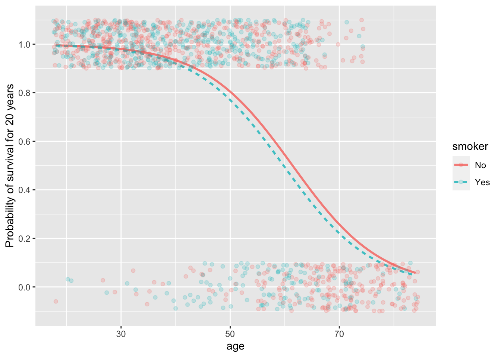

mpg_mod <- lm(mpg ~ hp + wt, data = mtcars)
mpg_mod %>% coefficients()(Intercept) hp wt
37.22727012 -0.03177295 -3.87783074 A probability—a number between 0 and 1—is the most used measure of the chances that something will happen, but it is not the only way nor the best for all purposes.
Also part of everyday language is the word “odds,” as in, “What are the odds?” to express surprise at an unexpected event.
Odds are usually expressed in terms of two numbers, as in “3 to 2” or “100 to 1”, written more compactly as 3:2 and 100:1 respectively. The setting for odds is an even that might happen or not: the horse Fortune’s Chance might win the race, otherwise not; it might rain today, otherwise not; the Red Sox might win the World Series, otherwise not.
The format of a probability assigns a number between 0 and 1 to the chances that Fortune’s Chance will win, or that it will rain, or that the Red Sox will come out on top. If that number is called \(p\), then the chances of the “otherwise outcome” must be \(1-p\). The event with probability \(p\) would be reformatted into odds as \(p:(1-p)\). No information is lost if we treat the odds as a single number, the result of the division \(p/(1-p)\). Thus, when \(p=0.25\) the corresponding odds will be \(0.25/0.75\), in other words, 1/3.
A big mathematical advantage to using odds is that the odds number can be anything from zero to infinity; it’s not bounded within 0 to 1. Even more advantageous for the purposes of accumulating risk is the logarithm of the odds, called “log odds.” We will come back to this later.
Maybe move this to a earlier lesson. Not clear.
The linear models (lm()) we have mostly been using up until now accumulate the model output as a linear combination of model inputs. Consider, for instance, a simple model of fuel economy based on the horsepower and weight of a car:
mpg_mod <- lm(mpg ~ hp + wt, data = mtcars)
mpg_mod %>% coefficients()(Intercept) hp wt
37.22727012 -0.03177295 -3.87783074 These coefficients mean that the model output is a sum. For instance, a 100 horsepower car weighting 2500 pounds has a predicted fuel economy of 37.2 - 0.032*100 - 3.88*2.5=24.3 miles per gallon.1 If we’re interested in making a prediction, we often hide the arithmetic behind a computer function, but it is exactly this arithmetic:
mod_eval(mpg_mod, hp = 100, wt = 2.5) hp wt model_output
1 100 2.5 24.3554The arithmetic, in principle, let’s us evaluate the model for any inputs, even ridiculous ones like a 10,000 hp car weighing 50,000 lbs. There is no such car, but there is a model output.2
mod_eval(mpg_mod, hp=10000, wt = 50) hp wt model_output
1 10000 50 -474.3937The prediction reported here means that such a car goes negative 474 miles on a gallon of gas. That’s silly. One way to deal with such silliness is to restrict the inputs to “reasonable” values.
Often, a better way to avoid the silliness is to structure the model so that unreasonable outputs—such as negative miles per gallon—cannot happen. Figuring out how to do this draws on mathematical experience. In this case, modeling the logarithm of mpg means that a numerically negative output still corresponds to a positive mpg. If we want the model output denominated in miles-per-gallon rather than logarithmic units, we just need to exponentiate (exp()) the logarithmic output to return to the world of miles-per-gallon:
mod_logmpg <- lm(log(mpg) ~ hp + wt, data = mtcars)
mod_eval(mod_logmpg, hp=10000, wt=50) %>%
mutate(model_mpg = exp(model_output)) hp wt model_output model_mpg
1 10000 50 -21.6327 4.02753e-10This “trick” of modeling the logarithm of output keeps the model output in bounds so far as mpg is concerned. There will never be a negative mpg output.3 ## Modeling log odds
When a model output is intended to be interpreted as a probability, we have a similar problem. THATS what the LOG-ODDS transformation DOES. WITH LOG-ODDS we can model probability using linear combinations of inputs.
DOES IT MAKE SENSE TO FRAME a PREDICTION IN TERMS OF A PROBABILITY? So long as the probability is not exactly zero or one, observing either of the two kinds of events—e.g., yes/no, alive/dead, diseased/healthy—does not contradict the model output. So how can we judge if a model is on-target or not. Or, equivalently, how can we decide which of two models is better.
In Lesson 26 we introduced the idea of a prediction interval OUTPUT SHOULD ALMOST ALWAYS (95% of the time) be within the interval.
The problem for us now is to create something like the PREDICTION INTERVAL when the model output is a probability.
INTRODUCE the variance as a measure of uncertainty. The variance of a probability is \(p(1-p)\).
The most familiar use of “odds” is in gambling. For instance, a famous song lyric puts the odds of Valentine winning the horse rate “at five to nine.” Less musically, this odds is \(5/9 = 0.5555\), but the two-number format makes particular sense for keeping track of bets. Five-to-nine describes a bet of one unit. The second number, 9, specifies the amount the gambler is staking on the outcome. On a loss, the gambler loses that stake. On a win, the gambler gets back the stake and, in addition, gets the amount specified by the first number. So a winner at five to nine would leave the racetrack with an extra $5. But on a loss, the gambler leaves $9 behind.
A “bookie” is someone who provides a service. You can go to a bookie to lay a bit. In drama, this might be done by telephone: “Lay $90 on Valentine” is all the gambler needs to communicate. No money has to change hands. On a win, the bookie will return $50 to the gambler. On a loss, the gambler has a debt of $90.
A bookie is not a gambler; he’s an accountant who records numbers. The bookie arranges these numbers so that he makes money. To see this, imagine a horse race including Valentine, Paul Revere, and Epitaph. To start, the bookie specifies odds on each possible outcome, say 5:9 for Valentine, 1:3 for Paul Revere (a favorite!), and 1:2 on Epitaph.
If the bookie has a good nose, about a third of the stakes will be bet on each outcome. If not, as new bets come in the bookie raises or lowers the odds to encourage or discourage bets so that the roughly one-third of stakes are placed on each outcome. Suppose at the end of the day that $500 is staked on each of the three outcomes.
WRONG WRONG WRONG. It needs to work that the winning returned for Valentine has to be less than the stakes on the other horses, and similarly for all horses. So if $100 is bet on Valentine we need $100 staked on the other horses.
Added up, these odds are \(5+1+1=7\) on the top and \(9+2+1=12\) on the bottom. It’s important—for the bookie—that the odds are arranged so that the bottom number is larger than the top number: 12 is larger than 11. Note that this method of adding is simpler than combining fractions. To add the fractions \(1/2\) and \(1/3\) gives \(5/6\). But to combine the odds \(1:2\) and \(1:3\) gives \(2:5\). One more detail is needed for a real-life bookies, taking into account the size of each bet. For instance, a $5 bet at 5:9 would be recorded as 25:45.
Now the race is run. The winner is … well … from the bookie’s point of view it doesn’t matter who wins.
[From The Model Thinker, p. 52]
Gain Framing: You have two options
Option A) Win $400 for certain
Option B) Win $1000 if a fair coin comes up heads and $0 if tails
Loss Framing: You are given $1000 and have two options:
Option a) Lose $600 for certain
Option b) Lose $0 if a fair coin comes up heads and lose $1000 if tails.
Hyperbolic discounting: see pp 52-43
“Prospect theory”, Kahneman and Tversky (1979) “Prospect theory: an analysis of decisions under risk,” Econometrica 47(2):263-291 link to paper
A subtle modification to the linear model architecture allows the modeller to guarantee that the output will be between zero and one. The modified architecture, called “logistic regression”, is therefore well suited to modeling categorical response variables, where the model output will be interpreted as a probability.
Figure 33.1 shows a logistic model of survival as a function of age and smoking status. Notice that in the logistic model, the effect of smoking on survival is negative, particularly for people around age 50. The logistic architecture provides an intrinsic flexibility which avoids the undue influence of the very young and very old, for whom survival is close to 100% or 0 respectively regardless of smoking status.
Scale for 'y' is already present. Adding another scale for 'y', which will
replace the existing scale.
US Federal law forbids employment discrimination based on age. (There are some exceptions, such as air-traffic controllers, whose mandatory retirement age is 56). In a discrimination lawsuit, data on who was and who was not laid-off was used to construct a model of the probability of layoff. The effect size is, as usual for a probability model, expressed in log odds.
These estimates come from a logistic regression model laid_off ~ over50 + software_engineer + pay_above_average.
The baseline risk of being laid off is 20%. For the employee aged over 50 years, the log odds of the risk is -1.4 + 1 ± 0.3, or -0.7 to -0.1. Translating these log odds into probabilities gives a risk of 33% to 47%, with the range reflecting the uncertainty in the effect size from the model. The estimated relative risk (risk ratio) for the employees over 50 ranges from 33/20 to 47/20, that is, from 1.65 to 2.35. The attributable fraction is \((RR - 1) / RR\) and therefore ranges from (1.65 - 1)/1.65 to (2.35 - 1) / 2.35 or 40% to 57%.
The wt variable is measured in units of 1000 lbs, so a 2500 pound vehicle has a wt value of 2.5.↩︎
A 10,000 hp, 50,000 lbs ground vehicle does have a name: a “tank.” Common sense dictates that one not put too much stake in a calculate of a tank’s fuel economy based on data from cars!↩︎
That does not fix the absurdity of modeling tanks based on the fuel economy of cars.↩︎